What the Alps are, how cold it gets in April, when the blossoms peak, and three easy train routes from Kyoto back to Tokyo, with the best spots and ryokan along the way.
What are the Japan Alps? Three mountain ranges down the middle of Honshu, between Tokyo and Kyoto, with peaks over 3,000 m (about 10,000 ft). The towns you’d visit sit in valleys below them and are easy to reach by train.
Is it cold? Cool, not harsh. In early April, normal highs are about 57–61°F in Kanazawa, Takayama and Matsumoto, but nights in the mountain towns drop to about 33–37°F (JMA). Bring a warm coat for evenings. The high mountain sights (Kamikochi, the Alpine Route) don’t open until mid-April.
Is spring good? Yes. The blossoms here come after Kyoto’s, so you get a second peak: Kanazawa’s normal full bloom is Apr 8 and the Alps towns follow into mid-April.
Our pick:Route A. Tokyo Mar 27 → Kyoto Apr 1 → Kanazawa (3 nights) → Matsumoto (2 nights) → Tokyo Apr 10. Trains only, two hotels, one easy change per travel day.
Even simpler: just stay in Kanazawa 4 nights, then take the Kagayaki Shinkansen straight to Tokyo (2h26–2h39, no change).
Want the thatched village and Takayama?Route B, but it has a bus day and those towns usually bloom later.
One hotel only?Route C: Matsumoto for 4 nights via Nagoya.
Book refundable. There’s no 2027 forecast yet, and bloom dates swing a week or more. Kanazawa’s full bloom ranged from Mar 29 to Apr 8 in 2021–2026.
What are the Japan Alps?
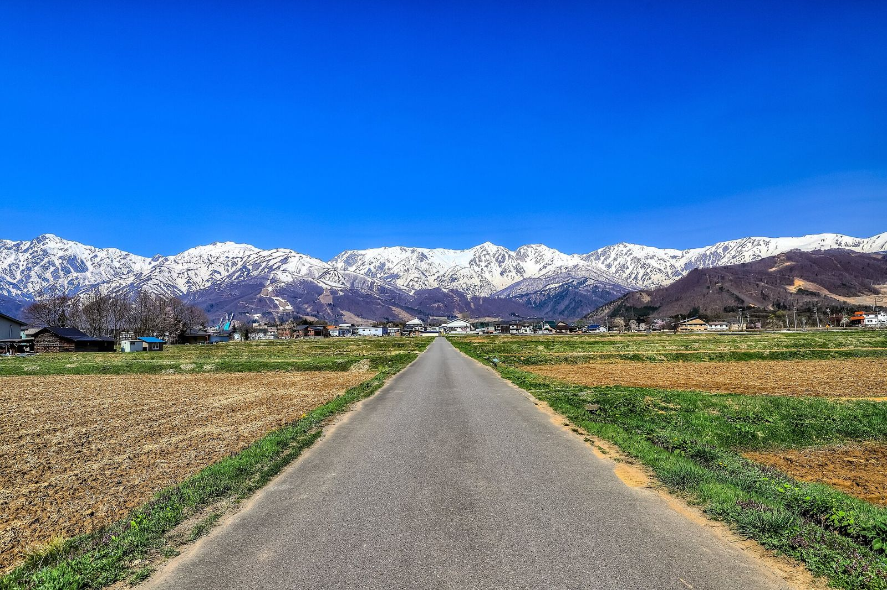
The Hakuba peaks of the Northern Alps, from Hakuba village · 2018. Photo: くろふね, CC BY-SA 4.0, via Wikimedia Commons
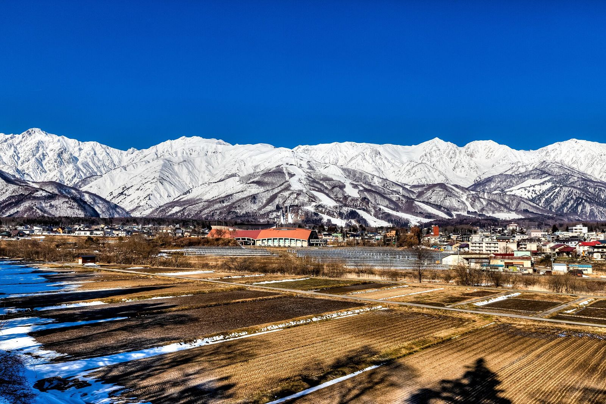
The Hakuba peaks of the Northern Alps from Tenjinzaka, Hakuba · 2019. Photo: くろふね, CC BY-SA 4.0, via Wikimedia Commons
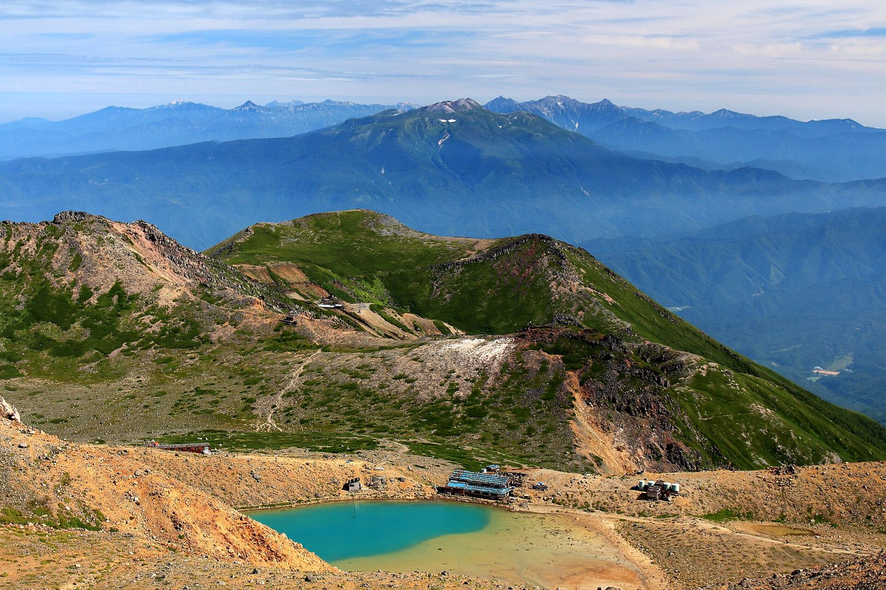
The Hida Mountains (Northern Alps) from Mount Ontake · 2014. Photo: Alpsdake, CC BY-SA 4.0, via Wikimedia Commons
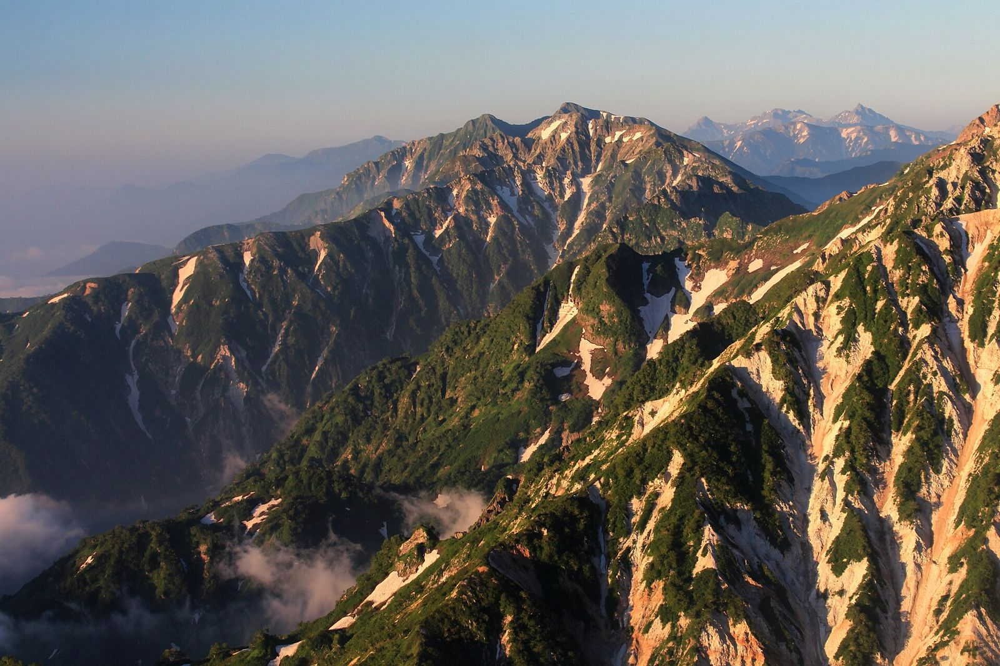
The Hida Mountains from Mount Korenge · 2018. Photo: Alpsdake, CC BY-SA 4.0, via Wikimedia Commons
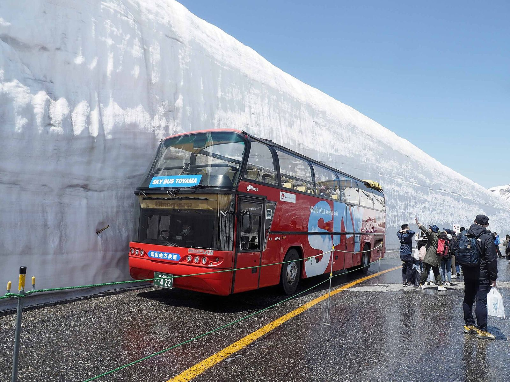
A bus between the snow walls on the Tateyama Kurobe Alpine Route · 2023. Photo: Comyu, CC BY-SA 4.0, via Wikimedia Commons
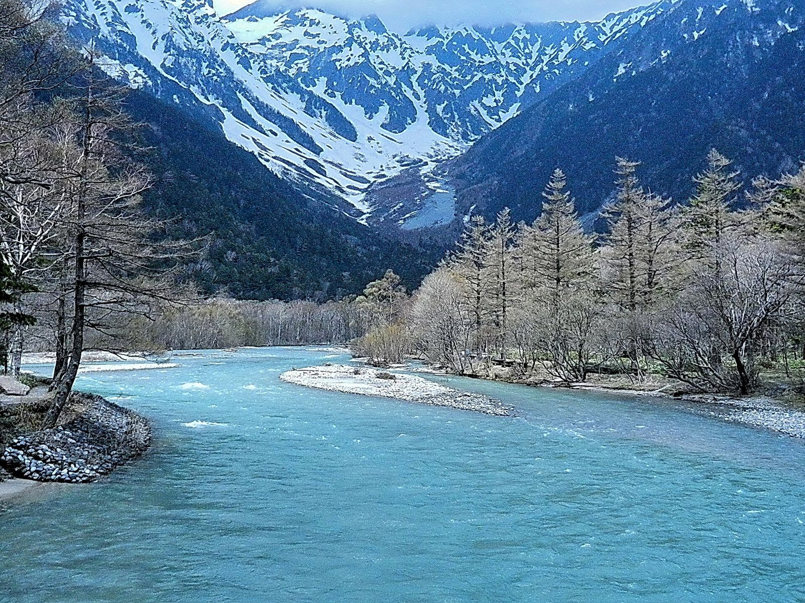
Kamikochi. Photo: lienyuan lee, CC BY 3.0, via Wikimedia Commons
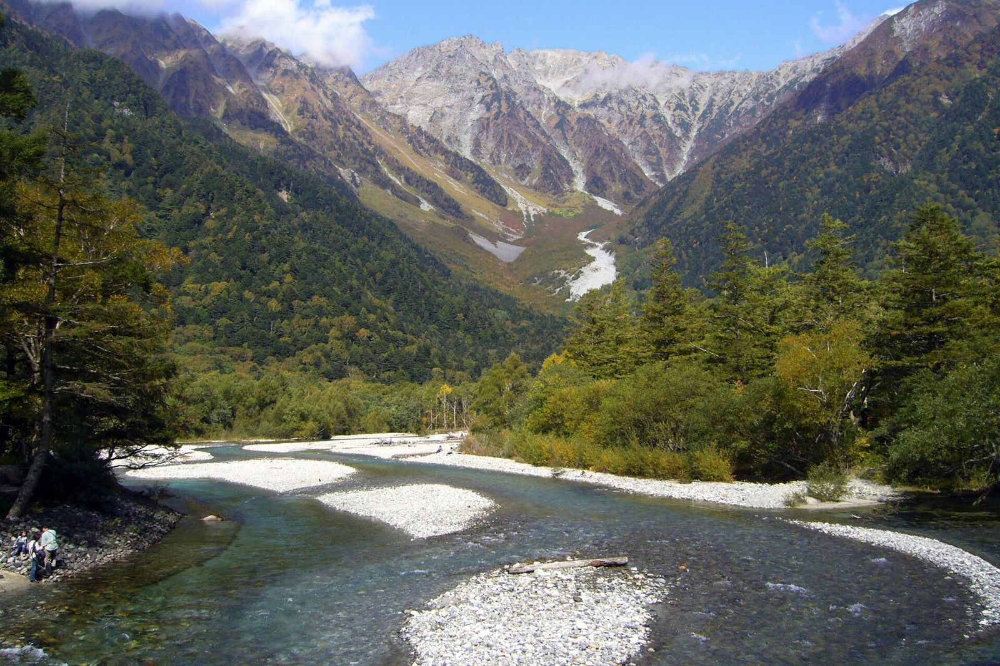
Mount Hotaka from Kamikochi · 2005. Photo: 663highland, CC BY 2.5, via Wikimedia Commons
1 / 7
The Japan Alps (日本アルプス) are three mountain ranges that run down the middle of Honshu, Japan’s main island, roughly halfway between Tokyo and Kyoto. They’re about 200 km long and include several peaks over 3,000 m, the tallest in Japan after Mount Fuji. An English archaeologist, William Gowland, coined the name; the missionary Walter Weston made it famous (Wikipedia).
Northern Alps · Hida Mountains
The big, snowy wall you see from Matsumoto. Highest: Mount Hotaka, 3,190 m. Home to Kamikochi and the Tateyama Kurobe Alpine Route. Spans Nagano, Toyama and Gifu.
Central Alps · Kiso Mountains
A narrower range entirely in Nagano Prefecture, with the Kiso Valley post towns on its west side and Takato on its east.
Southern Alps · Akaishi Mountains
The highest point of all: Mount Kita, 3,193 m. Wilder and less visited; across Nagano, Yamanashi and Shizuoka.
What makes it special: it’s one of the world’s heaviest snowfall areas, so in April you get snowy peaks above valleys in bloom, plus old castle and merchant towns, onsen ryokan, and food you won’t find in Tokyo (Hida beef, Kanazawa seafood, soba, sake). It also has Japan’s only glaciers: seven active ones (Wikipedia).
The towns, in plain terms
“In the Alps?” is our plain-language call based on where the town sits relative to the three ranges.
Place
In the Alps?
Why go
Getting there
Kanazawa
No: on the Sea of Japan coast
The gateway. Gardens, a castle park, geisha teahouse streets and great seafood. Not in the mountains, but the easiest first stop after Kyoto.
From Kyoto 1h48 (one change); to Tokyo 2h26 direct
Shirakawa-go
Yes, in the Hida mountains
UNESCO village of steep thatched farmhouses. Snow can linger into April; its cherry trees usually bloom mid to late April (village website).
Bus from Kanazawa 1h15, or Takayama about 50 min
Takayama
Yes, Hida mountain basin
The classic Alps old town: dark-wood merchant streets, sake breweries, morning markets, and the Spring Festival on Apr 14–15.
Bus from Kanazawa about 2h15; Hida train from Nagoya 2h15–2h42
Matsumoto
Yes, below the Northern Alps
A real original castle with the snowy peaks behind it. Flat, walkable, good food and coffee. Gateway to Kamikochi.
Azusa from Shinjuku about 2.5 h; Shinano from Nagoya about 2 h
Kamikochi
Yes, deep in the Northern Alps
A high valley with a river and the Hotaka peaks. Closed to buses until Apr 17 every year, so it doesn’t fit early April.
Bus from Matsumoto area; no private cars
Tateyama Kurobe Alpine Route
Yes, over the Northern Alps
Cable cars, buses and ropeways across the range, with the famous snow walls. Opened Apr 15 in 2025 and 2026; 2027 not announced.
From Toyama or Nagano side; a full day
Nagano & Obuse
Edge of the Alps
Zenkoji temple in Nagano city; Obuse is a small chestnut-and-sake town nearby.
Kagayaki Shinkansen from Kanazawa about 65 min
Karuizawa
No: a highland resort east of the Alps
Forest villas and onsen resorts on the Shinkansen line to Tokyo. Colder than the other towns here (JMA), so it’s a stay for onsen, not for sakura.
Hokuriku Shinkansen from Tokyo
Kiso Valley (Narai, Tsumago, Magome)
Yes, between the Central and Northern Alps
Preserved post towns on the old Nakasendo road between Kyoto and Tokyo. Narai has the BYAKU Narai inn.
Narai is south of Matsumoto by local train; Tsumago and Magome are further south
Is it cold? Weather in early to mid April
Short answer: mild days, cold nights. Kanazawa is on the coast, so it stays milder at night. The mountain basins (Takayama, Matsumoto, Nagano) warm up nicely by day but drop close to freezing after dark in early April. Karuizawa, up on a plateau, is the coldest.
Town
Apr 1
Apr 5
Apr 10
Apr 15
April average
April rain
Kanazawa On the coast, Sea of Japan side
58°F14.3°C 42°F5.5°C
59°F15.1°C 43°F6.3°C
61°F16.1°C 45°F7.2°C
63°F17.3°C 47°F8.2°C
63°F17.3°C 47°F8.2°C
144 mm
Takayama Mountain basin, Gifu
56°F13.4°C 33°F0.5°C
58°F14.5°C 34°F1.3°C
60°F15.7°C 36°F2.3°C
62°F16.9°C 38°F3.4°C
63°F17.0°C 38°F3.4°C
124 mm
Matsumoto Mountain basin, Nagano
58°F14.5°C 34°F1.3°C
60°F15.6°C 36°F2.2°C
62°F16.7°C 38°F3.3°C
64°F17.9°C 40°F4.4°C
64°F17.9°C 40°F4.4°C
81 mm
Nagano Basin, north Nagano
57°F13.7°C 35°F1.7°C
59°F14.9°C 37°F2.6°C
61°F16.2°C 39°F3.8°C
63°F17.4°C 41°F4.9°C
63°F17.4°C 41°F4.9°C
57 mm
Karuizawa Highland resort, east Nagano
52°F11.1°C 28°F-2.3°C
54°F12.1°C 29°F-1.6°C
56°F13.2°C 31°F-0.6°C
58°F14.3°C 33°F0.6°C
58°F14.3°C 33°F0.6°C
81 mm
Each cell: normal daily high (top) and low (bottom), 1991–2020 averages from the Japan Meteorological Agency. Sources: Kanazawa: monthly, daily · Takayama: monthly, daily · Matsumoto: monthly, daily · Nagano: monthly, daily · Karuizawa: monthly, daily.
What to pack
Layers: a light sweater for daytime and a warm coat or packable down jacket for evenings, especially for night sakura at Matsumoto Castle or Takato.
A compact umbrella: Kanazawa gets about 144 mm of rain in April, the wettest of these towns.
Comfortable walking shoes that slip on and off easily for ryokan, temples and castle keeps.
Ryokan provide yukata robes, so you don’t need loungewear.
What’s closed or snowy in early April
Kamikochi: buses and taxis start running in on Apr 17 every year The official season opening is Apr 27. In 2026 the road opened Apr 17. Kamikochi official · 2026 notice
Tateyama Kurobe Alpine Route: the 2026 season ran Apr 15–Nov 30, and it also opened Apr 15 in 2025. The 2027 date isn’t on the official site yet. The snow-wall walk ran Apr 15–Jun 25 in 2026, and the walls were 12 m that year. Official site · Snow wall history
Shirakawa-go: the village says snow “remains here and there around the village until around April,” and its cherry trees usually bloom mid to late April. Village: spring · Village FAQ
So for an Apr 5–10 trip, skip the high mountain sights and enjoy the Alps from the valleys: castle and river views with snowy peaks behind.
Is spring a good time? Yes: a second peak after Kyoto
The blossoms move north and uphill. Kyoto’s normal full bloom is Apr 4; Kanazawa and Toyama on the coast follow around Apr 8, and the mountain basins come later still. So leaving Kyoto on Apr 5 puts you right behind the bloom.
Full bloom = 80% or more open on the official tree. Normal = 1991–2020 average. Source: Japan Meteorological Agency full-bloom dates and first-bloom dates. JMA doesn’t observe Matsumoto or Takayama.
Spring Takayama Festival: Apr 14–15, every year. Festival floats are the highlight; on the night of Apr 14 the lantern-lit floats parade from near Nakabashi at 6 pm (cancelled if it rains). Route B arrives just before it; add nights in Takayama to catch it. Hida Takayama official
Three simple routes after Kyoto
All three start the day you leave Kyoto (Apr 5; shift everything a day earlier if you leave Apr 4) and end in Tokyo, so you can fly home. Train times come from JR and timetable sites (listed in Sources). Book reserved seats; sakura season is busy.
If you want one base, a ryokan with onsen, the castle, and Takato, and don’t mind skipping Kanazawa.
Star ratings are our judgment: ease counts transfers, buses and luggage; sakura match is based on the bloom data above.
Before the Alps: Tokyo Sat Mar 27 → Thu Apr 1 (Tokyo guide), then the Nozomi to Kyoto Apr 1 → Apr 4/5 (Kyoto guide). The Japan-wide guide has other regions.
★★★★★ 3 train trips, 2 of them with one easy change.
Sakura match
★★★★☆ Good match. Kanazawa’s normal full bloom is Apr 8 (JMA) and in 2021–2026 it was Mar 29–Apr 8, so Apr 5–8 is around peak. Matsumoto is usually mid April (japan-guide; 2026 best viewing Apr 4–9) and Takato early to mid April, so Apr 8–10 is right in the window most years.
Fits your plan
Leave Kyoto on Apr 5 (or Apr 4) and end at Shinjuku in Tokyo. No buses or cars needed.
Best for
Best all-round pick. Gardens and old teahouse streets in Kanazawa, then a castle with the snowy Alps behind it and Takato’s famous castle-ruins park in bloom. Ryokan at both ends.
Luggage
Two hotel changes only. Wheel your bags onto the trains (they’re reserved-seat expresses), or send big cases ahead by takkyubin: usually next-day delivery, about ¥3,200 for a suitcase Tokyo ↔ Kyoto as a guide (japan-guide).
Day
Daytime
Evening
Stay
Mon Apr 5 Kyoto → Kanazawa
Thunderbird to Tsuruga, then cross the platform to the Hokuriku Shinkansen. Fastest is 1h48 (e.g. 06:59 → 08:47); the standard change at Tsuruga is 8 minutes. Afternoon: Kanazawa Castle Park.
Kenrokuen lit up for the sakura (2026: Apr 2–8, free).
Tsuruko or Hyatt Centric Kanazawa
Tue Apr 6 Kanazawa
Kenrokuen at opening (7 am during the 2026 light-up), then Higashi Chaya and the Asanogawa river walk at Kazuemachi.
Dinner in Kazuemachi or at the ryokan.
Same
Wed Apr 7 Kanazawa (free day)
Pick one: Toyama’s Matsukawa River blossoms (19 min by Shinkansen), or a ryokan night at Yamashiro Onsen (Beniya Mukayu or Araya Totoan, via Kaga Onsen Station).
—
Same, or a Yamashiro Onsen ryokan
Thu Apr 8 Kanazawa → Matsumoto
Kagayaki Shinkansen to Nagano (about 65 min), then the Shinano limited express to Matsumoto (about 50 min, roughly hourly).
Matsumoto Castle night viewing if it has started (5:30–9 pm).
Tobira Onsen Myojinkan or Matsumoto Jujo
Fri Apr 9 Takato or Narai
Takato Castle Ruins Park day trip (in 2026 a seasonal JR bus ran from Chino Station, 50 min), or a slow day: Koboyama Park and the old post town of Narai-juku.
Takato is lit until 9 pm at peak.
Same, or BYAKU Narai
Sat Apr 10 Matsumoto → Tokyo
Morning at the castle, then the Azusa direct to Shinjuku (about 2.5 h, 1–2 an hour, all seats reserved).
★★★☆☆ 1 train trip, 2 bus legs, then 2 trains home.
Sakura match
★★☆☆☆ Early for the mountains. Takayama usually peaks mid to late April (japan-guide; 2026 best viewing Apr 8–13) and Shirakawa-go’s trees usually bloom mid to late April (village website), with snow patches possible into April. In an early year like 2026 it works; in a normal year you’d see Kanazawa in bloom and Takayama in bud.
Fits your plan
Same start and end dates. You get the famous thatched village and the classic Alps old town.
Best for
Anyone who wants the “postcard” Alps: thatched farmhouses and Takayama’s old merchant streets. Best if you can push the dates a week later.
Luggage
The bus day is the hard part: reserve the Shirakawa-go buses and send suitcases ahead by takkyubin so you only carry a day bag. The ride home is the longest leg on this page.
Day
Daytime
Evening
Stay
Mon Apr 5 Kyoto → Kanazawa
Thunderbird + Hokuriku Shinkansen via Tsuruga, fastest 1h48.
Kenrokuen light-up (2026: Apr 2–8).
Tsuruko or Hyatt Centric Kanazawa
Tue Apr 6 Kanazawa
Kenrokuen early, Higashi Chaya, Asanogawa.
—
Same
Wed Apr 7 Kanazawa → Shirakawa-go → Takayama
Reserved highway bus: 1h15 to Shirakawa-go, walk the village, then a later bus on to Takayama (about 50 min). Booked as two legs, ¥2,800 each; staying on is about 2h15, ¥4,200. Send big bags ahead by takkyubin the day before.
Nakabashi Bridge and the Miyagawa river at dusk.
Wanosato or Machiyado Ichiryu
Thu Apr 8 Takayama
Morning market, the old town, Takayama Jinya. Garyu-zakura by Hida-Ichinomiya Station is a short train ride.
Ryokan dinner.
Same
Fri Apr 9 Takayama
Slow day, or Hida-Furukawa. If you can shift the whole trip, Apr 14–15 is the Spring Takayama Festival.
—
Same
Sat Apr 10 Takayama → Tokyo
Hida limited express to Nagoya (2h15–2h42, about hourly), then the Shinkansen to Tokyo; japan-guide puts the whole trip at about 4.5 h. Via Toyama is similar but has only 2–3 good connections a day.
★★★☆☆ Fair to good. Matsumoto usually peaks mid April (japan-guide) and Takato early to mid April (2026 peak Apr 4–13). Apr 5–6 may be a bit early in a normal year, so do the castle at the end of the stay.
Fits your plan
Fewest moving parts after Kyoto. One check-in, then day trips, then a direct train to Shinjuku.
Best for
If you want one base, a ryokan with onsen, the castle, and Takato, and don’t mind skipping Kanazawa.
Luggage
One hotel, so no luggage shuffling. You change trains once in Nagoya on the way in.
Day
Daytime
Evening
Stay
Mon Apr 5 Kyoto → Matsumoto
Nozomi to Nagoya (about 35 min), then the Shinano limited express to Matsumoto (about 2 h; e.g. 10:00 → 12:06).
Check in, onsen.
Tobira Onsen Myojinkan or Matsumoto Jujo
Tue Apr 6 Narai-juku
Old Nakasendo post town south of Matsumoto. Lunch at BYAKU Narai.
—
Same
Wed Apr 7 Takato
Takato Castle Ruins Park day trip (2026: seasonal JR bus from Chino Station, 50 min).
Takato lit until 9 pm at peak.
Same
Thu Apr 8 Matsumoto
Matsumoto Castle and Koboyama Park (about 2,000 trees, Alps views).
Pink circles are cherry blossom spots, blue squares are hotels, brown squares are other towns and sights, grey dots are stations. Colored lines are the three routes (straight lines between stops, not the actual track); dotted lines are day trips. Tap a pin for details.
Cherry blossom spotHotelTown or sightStationRoute ARoute BRoute C
Six spots along these routes. Every photo was taken at that spot in blossom season and comes from Wikimedia Commons, credited under each image. Light-up details are from 2026; 2027 dates come out in early spring.
Kenrokuen & Kanazawa Castle Park · 2008. Photo: KimonBerlin, CC BY-SA 2.0, via Wikimedia Commons
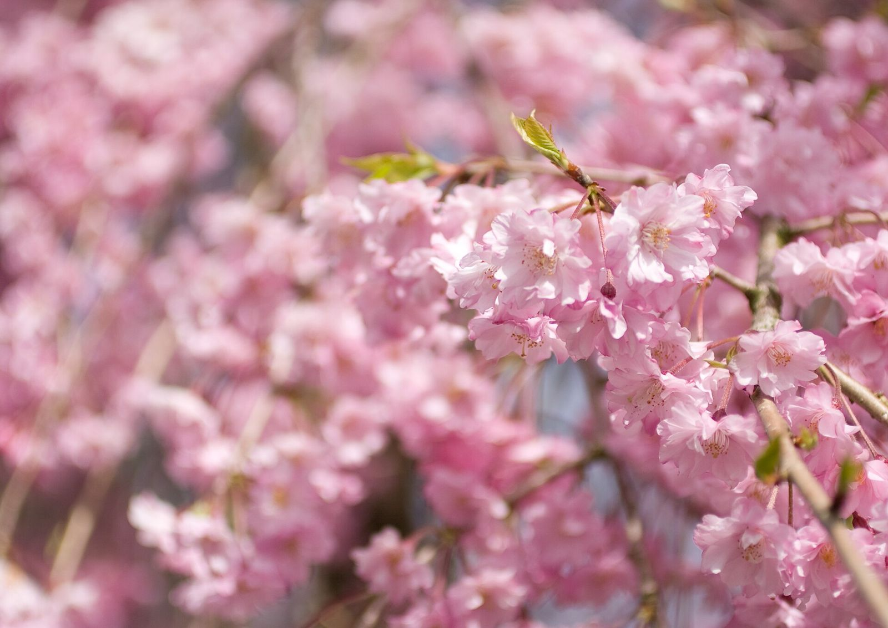
Kenrokuen & Kanazawa Castle Park · 2008. Photo: KimonBerlin, CC BY-SA 2.0, via Wikimedia Commons
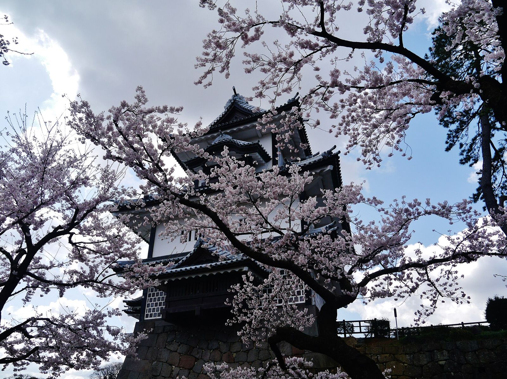
Kenrokuen & Kanazawa Castle Park · 2019. Photo: Zairon, CC BY-SA 4.0, via Wikimedia CommonsKenrokuen & Kanazawa Castle Park · 2019. Photo: Zairon, CC BY-SA 4.0, via Wikimedia Commons
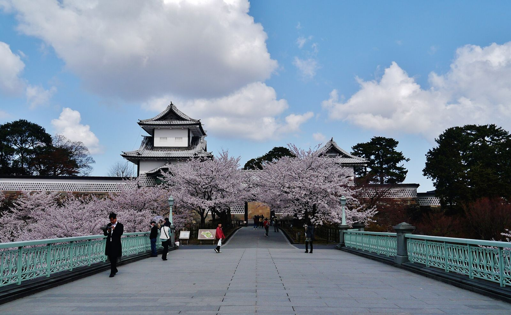
Kenrokuen & Kanazawa Castle Park · 2019. Photo: Zairon, CC BY-SA 4.0, via Wikimedia CommonsKenrokuen & Kanazawa Castle Park · 2019. Photo: Zairon, CC BY-SA 4.0, via Wikimedia Commons
One of Japan’s three great gardens, with the castle park across the street. Visit Kanazawa says the garden has several cherry varieties, which stretches the season, and the best views are Hisago-ike Pond and Hanami-bashi bridge.
Best timing
JMA normal full bloom in Kanazawa: Apr 8. From 2021 to 2026 it came between Mar 29 and Apr 8.
Night
2026: free admission and evening light-up Apr 2–8; garden open 7 am–9:30 pm, lit from sunset. source
Getting there
About 10 minutes by bus from Kanazawa Station (japan-guide).
Cherry trees along the river in front of the old wooden teahouses of Kazuemachi, across the water from Higashi Chaya. Visit Kanazawa’s favorite view is from Nakanohashi footbridge.
Best timing
Same timing as Kenrokuen (early April).
Night
No 2027 light-up details found.
Getting there
Across the river from the Higashi Chaya teahouse district (Visit Kanazawa).
About 500 Somei Yoshino trees over 2.5 km of river by Toyama Castle Park, a “tunnel” of blossoms and one of Japan’s Top 100 cherry spots. Lit from dusk, and you can see it from a little sightseeing boat.
Best timing
JMA normal full bloom in Toyama: Apr 8. From 2021 to 2026 it came between Mar 27 and Apr 10. Toyama City says “typically late March to early April”.
Night
Illuminated from dusk (Toyama City tourism). source
Getting there
19 minutes from Kanazawa on the Kagayaki Shinkansen, then about 10 minutes on foot from Toyama Station.
The red Nakabashi Bridge and riverside trees in an old merchant town. The huge old Garyu-zakura tree is a short train ride south, beside Hida-Ichinomiya Station.
Best timing
Mid to late April in an average year (japan-guide). 2026 best viewing was Apr 8–13.
Night
Spring Takayama Festival: every Apr 14–15. Lantern-lit floats parade from near Nakabashi at 6 pm on Apr 14 only (cancelled if it rains). source
Getting there
From Kanazawa by reserved highway bus, about 2h15 with a stop at Shirakawa-go. From Nagoya, 2h15–2h42 on the Hida limited express.
One of Japan’s original castles (japan-guide), black and white, with about 300 cherry trees around the moats and the snowy Alps behind it on a clear day. Koboyama Park, a 15-minute bus ride south, has nearly 2,000 trees and Alps views.
Best timing
Mid April in an average year (japan-guide); 2026 best viewing was Apr 4–9.
Night
Night viewing runs for 8 days, starting the third day after it’s announced: 5:30–9 pm, Honmaru Garden free (no keep entry). source
Getting there
Direct from Shinjuku on the Azusa (about 2.5 h) or from Nagoya on the Shinano (about 2 h).
Takato Castle Ruins Park · 2021. Photo: MaedaAkihiko, CC BY-SA 4.0, via Wikimedia CommonsTakato Castle Ruins Park · 2016. Photo: Kzu06, CC BY-SA 4.0, via Wikimedia Commons
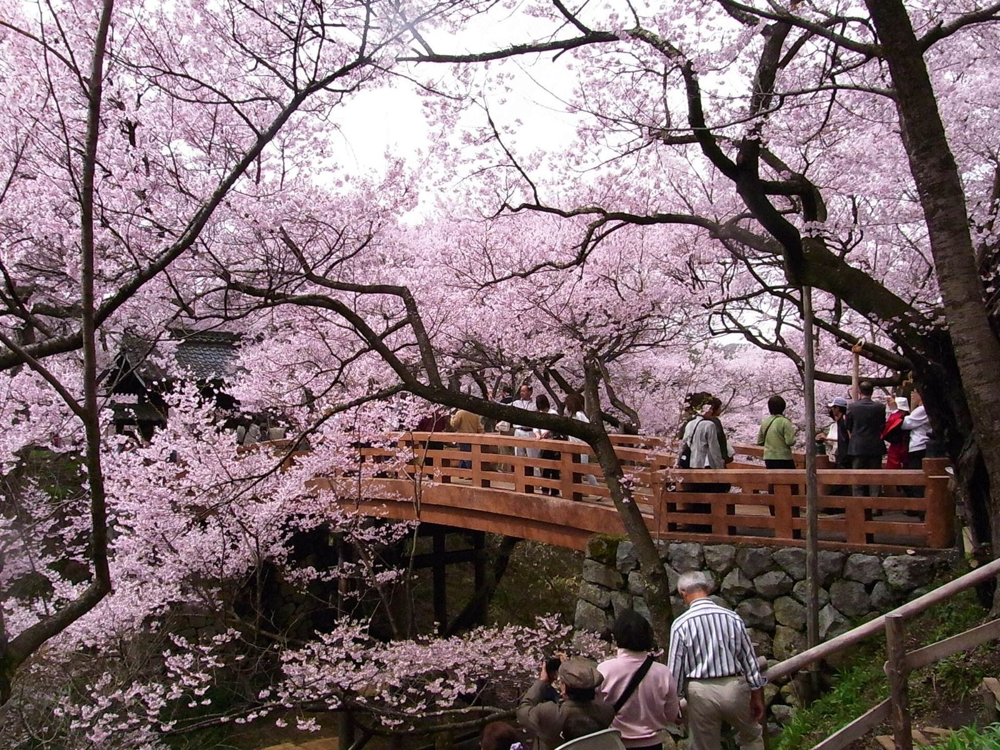
Takato Castle Ruins Park · 2010. Photo: 江戸村のとくぞう, CC BY-SA 4.0, via Wikimedia Commons
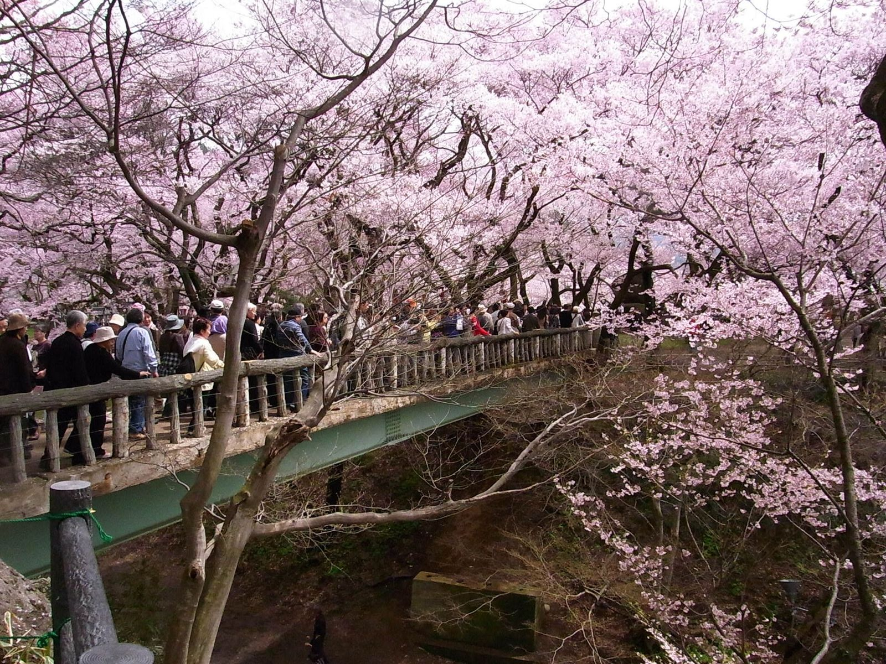
Takato Castle Ruins Park · 2010. Photo: 江戸村のとくぞう, CC BY-SA 4.0, via Wikimedia Commons
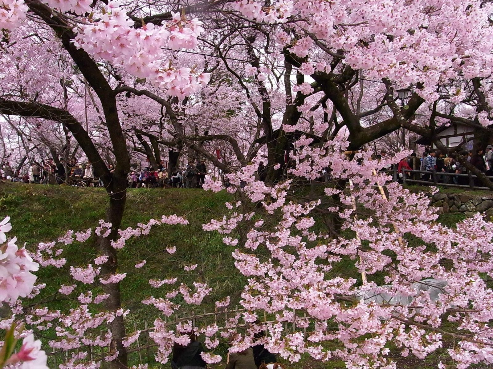
Takato Castle Ruins Park · 2010. Photo: 江戸村のとくぞう, CC BY-SA 4.0, via Wikimedia Commons
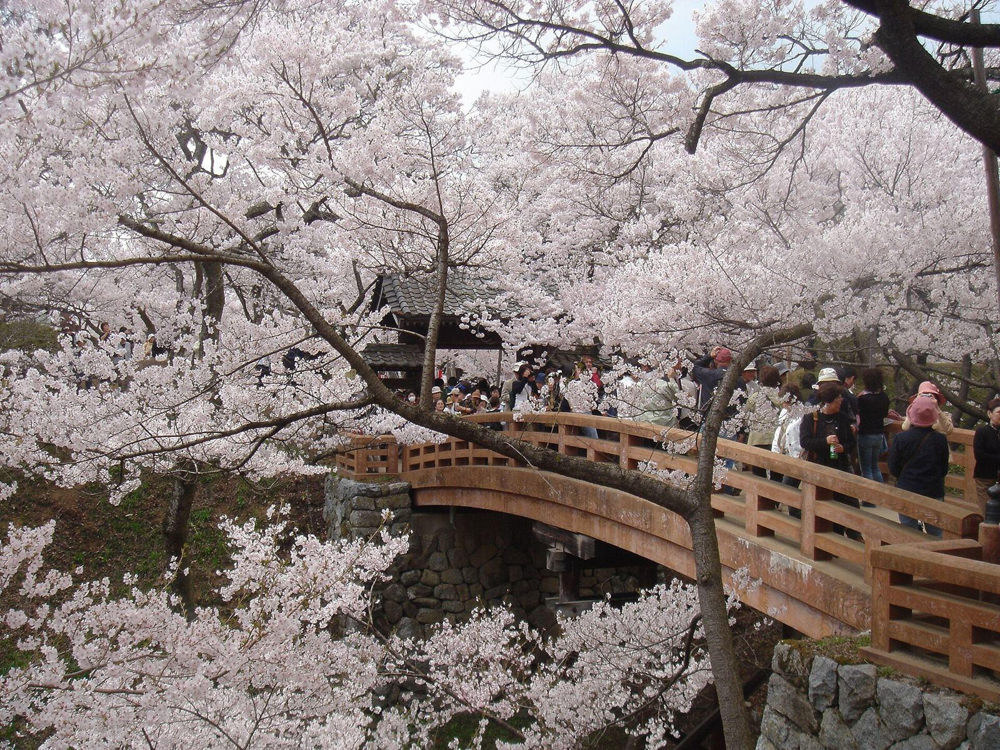
Takato Castle Ruins Park. Photo: Unknown author, Public domain, via Wikimedia Commons
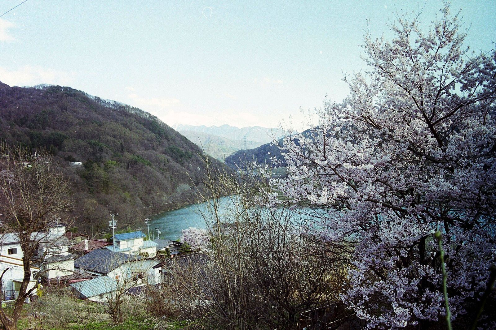
Takato Castle Ruins Park. Photo: Mamusi Taka, CC BY-SA 3.0, via Wikimedia Commons
Michelin Keys from the 2026 Japan selection. Sample nights are for the dates shown on each card.
Where to stay
Our picks are MICHELIN Key hotels and ryokan (2026 selection), a few MICHELIN-listed places that fit the route, and the Hyatt in Kanazawa for your Globalist status. There’s no Hyatt Category 6+ in the Alps; the only Hyatts nearby are in Kanazawa. Photos are the hotels’ own images via the MICHELIN Guide. Quotes are word for word from the linked page; “Guest” quotes are verified guest reviews shown on the MICHELIN Guide booking page.
How to read prices. Most hotels here hadn’t opened April 2027 dates when we checked (Oct 31, 2026), so most say “check live.” Where a price shows, it’s a real quote for 2 adults, 1 night, from the source named, and it’s typical, not guaranteed. Chase points: at 1¢ = USD × 100; with Points Boost at up to 2¢ = USD × 50 (eligible bookings only; Chase Travel may not list every ryokan). Points use the price with tax.
A long-loved Kanazawa restaurant rebuilt as a 4-room inn. Each room has a living room, dining room and open-air hot-spring bath. The chef, Keisuke Takemoto, trained at three-star Mizai and Aman Kyoto (Michelin). Walkable to Omicho Market and Kenrokuen.
Price
No spring 2027 dates were open on the MICHELIN Guide booking calendar when checked (Oct 31, 2026). Check the hotel or Chase Travel live.
Chase points
USD × 100 at 1¢, or USD × 50 with Points Boost
What reviewers say
“There are just four rooms, each with its own living room, dining room, and open-air bath”— MICHELIN Guide inspectors
Right by Kanazawa Station, so it’s the easiest base for the Shinkansen and the bus to Shirakawa-go. A points stay with your Globalist perks, not a luxury splurge.
Price
No spring 2027 dates were open on the MICHELIN Guide booking calendar when checked (Oct 31, 2026). Check the hotel or Chase Travel live.
Chase points
USD × 100 at 1¢, or USD × 50 with Points Boost
World of Hyatt
Category 3: 8k–20k points per night for a standard room (five date-based levels, chart in effect since May 20, 2026). Sources: Japan Hyatt category list (Jan 29, 2026) and 2026 award chart. Check hyatt.com for your dates before moving Chase points; transfers can’t be undone.
Your Globalist perks apply here. Hyatt’s Tiers & Benefits page lists: Room upgrade (as available at check-in); late checkout (as available at some locations); club access or breakfast; resort fees waived on eligible rates and free night awards; premium internet; bottled water; early access to award night inventory. Hyatt adds that in-hotel benefits “vary by membership tier and by participating hotel” and that “some benefits are subject to availability.” Source: World of Hyatt Tiers & Benefits (read from the 2026 archived copy because the live page was rate-limiting). Confirm upgrades and late checkout with the hotel.
What reviewers say
“a hotel that is thoroughly contemporary, full of modern Western design furniture and boutique-chic graphic interior design”— MICHELIN Guide inspectors
“the 14th-floor Roof Terrace Bar offers expansive views of Kanazawa from its picture windows and open-air terrace.”— MICHELIN Guide inspectors
A modern ryokan at Yamashiro Onsen, about an hour’s drive from Kanazawa. Every room has a private open-air hot-spring bath. Free shuttle from Kaga Onsen Station (Michelin). Children under 7 not accepted.
Price
Typical, check live: $1,306.73 with tax ($1,078.37 before tax, ¥170,000) for the Western Premier Garden View Room, Sun Apr 4, 2027, breakfast and dinner included, free cancellation until 22 days before. Other nights Apr 4–10, 2027 were $1,078–$1,180 before tax on the same calendar. Source: MICHELIN Guide booking, checked Oct 31, 2026.
A ryokan at Yamashiro Onsen, near Beniya Mukayu,, with cypress hot-spring baths on every room’s terrace and three public baths. Free transfer from Kaga Onsen Station (10 min) if arranged ahead (Michelin).
Price
Typical, check live: the MICHELIN Guide says “Rates begin JPY107800 per night” (about $686 at ¥157.25 per dollar; whether tax is included isn’t stated). No 2027 dates were open on its booking calendar. Source: MICHELIN Guide.
Chase points
68,553 points at 1¢ · 34,277 with Points Boost
What reviewers say
“Araya Totoan, in the mountains of Ishikawa Prefecture, is as meticulous as they come.”— MICHELIN Guide inspectors
“The food, which changes with the seasons, is of that sort that would be too pretty to eat if it weren’t so delicious.”— MICHELIN Guide inspectors
Eight rooms in old thatched farmhouses by a river outside Takayama. Free shuttle from Takayama Station (about 20 min) at 14:20, 15:20, 16:20 and 17:20; reserve ahead (Michelin).
Price
No spring 2027 dates were open on the MICHELIN Guide booking calendar when checked (Oct 31, 2026). Check the hotel or Chase Travel live.
Chase points
USD × 100 at 1¢, or USD × 50 with Points Boost
What reviewers say
“though the illusion of sleeping in the woods is persuasive, the comforts of Wanosato are as civilized as they come.”— MICHELIN Guide inspectors
A modern ryokan behind a classic machiya townhouse front in Takayama’s center, with hot-spring water in the public baths and in-room baths. Walk to Nakabashi and the old town.
Price
No spring 2027 dates were open on the MICHELIN Guide booking calendar when checked (Oct 31, 2026). Check the hotel or Chase Travel live.
A century-old two-story wooden townhouse next to the Kusakabe merchant house, rented out whole, with a cypress bath over a courtyard. Good for a couple who want the old town to themselves.
Price
No spring 2027 dates were open on the MICHELIN Guide booking calendar when checked (Oct 31, 2026). Check the hotel or Chase Travel live.
Chase points
USD × 100 at 1¢, or USD × 50 with Points Boost
What reviewers say
“Staying overnight at Taniya, located in the historic castle town of Takayama, is akin to sleeping at Fallingwater or another architectural landmark.”— MICHELIN Guide inspectors
“Since the property is rented out in its entirety, guests have exclusive access to the house’s peaceful tea room”— MICHELIN Guide inspectors
A classic mountain ryokan in the forest half an hour from Matsumoto, with three hot-spring baths looking out on the woods; some rooms have their own open-air bath. Free shuttle from the station (Michelin).
Price
Typical, check live: $822.48 with tax ($683.81 before tax, ¥129,360) for the Western-style Otaka Room, Wed Mar 31, 2027, breakfast and dinner included, free cancellation until 4 days before; room only was $685.72 with tax. April 2027 dates weren’t open yet; late-March nights ran $484–$563 before tax (lowest rate). Source: MICHELIN Guide booking, checked Oct 31, 2026.
Chase points
82,248 points at 1¢ · 41,124 with Points Boost
What reviewers say
“you’re surrounded by nothing but forested mountainsides as far as the eye can see.”— MICHELIN Guide inspectors
A redevelopment of a 17th-century inn at Asama Onsen on Matsumoto’s edge. Every room has a private hot-spring bath; the old public baths became a restaurant, café, bakery and bookstore.
Price
No spring 2027 dates were open on the MICHELIN Guide booking calendar when checked (Oct 31, 2026). Check the hotel or Chase Travel live.
Restored Edo-era buildings, including an old sake brewery, in Narai-juku, a preserved post town on the old Nakasendo road south of Matsumoto. Sake brewery and bar, Japanese restaurant and public baths.
Price
No spring 2027 dates were open on the MICHELIN Guide booking calendar when checked (Oct 31, 2026). Check the hotel or Chase Travel live.
Chase points
USD × 100 at 1¢, or USD × 50 with Points Boost
What reviewers say
“BYAKU Narai is a boutique hotel fashioned out of abandoned buildings, including an old sake brewery, a guesthouse, and part of a temple.”— MICHELIN Guide inspectors
“An excellent Japanese restaurant and public baths bring new life into what was nearly a ghost town.”— MICHELIN Guide inspectors
“it’s one of the few places in Japan that has retained its Edo-era architectural charm.”— Spoon & Tamago (on Narai-juku)
Five rooms at a hot-spring valley in Yamanouchi, north of Nagano (the town of the Jigokudani snow monkeys). Indoor, outdoor, communal and private baths are the point here.
Price
No spring 2027 dates were open on the MICHELIN Guide booking calendar when checked (Oct 31, 2026). Check the hotel or Chase Travel live.
Chase points
USD × 100 at 1¢, or USD × 50 with Points Boost
What reviewers say
“Shoraiso’s name, meaning “wind through the trees in the mountains”, perfectly conjures the luxe onsen tranquility on offer here”— MICHELIN Guide inspectors
“A series of baths — indoor, outdoor, communal, private — comprise the main attraction here”— MICHELIN Guide inspectors
Villas by a small lake and hot spring in the forest outside Karuizawa, about an hour from Tokyo by Shinkansen. Ryokan-style, with onsen and kaiseki dinners.
Price
No spring 2027 dates were open on the MICHELIN Guide booking calendar when checked (Oct 31, 2026). Check the hotel or Chase Travel live.
Train times were read from the timetable pages above on Oct 31, 2026; spring 2027 timetables can change, so check exact departures nearer the time. Not verified: 2027 light-up dates (none announced), the 2027 Alpine Route opening date, live Hyatt award availability, and whether Chase Travel lists each ryokan. Prices change daily.